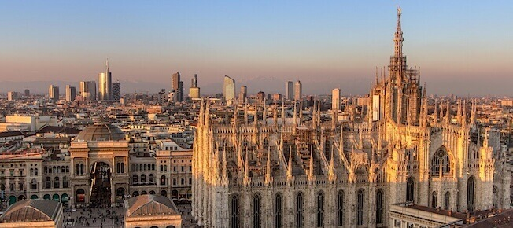

Il rapporto scorretto tra uomo e natura
Il rapporto tra uomo e natura , specialmente negli ultimi anni, è cambiato radicalmente, se tempo fa vedevamo la natura come una fonte che ci donava le sue bellezze e le sue ricchezze, negli ultimi tempi la natura è diventata una semplice miniera da sfruttare fino alla fine, o, in alcuni casi, una discarica.
Probabilmente è questa concezione che noi abbiamo della nostra casa che ci porta ad inquinare senza preoccuparcene e senza prendere in considerazione le possibili e catastrofiche conseguenze. Ci rendiamo conto delle nostre azioni solamente dopo che le abbiamo già compiute, quando ci vengono mostrate foto di posti idilliaci trasformati in luoghi grigi e opachi, ed è allora che l'uomo si pente e cerca di ridare la bellezza a quei posti, spesso con scarsi risultati, attraverso le bonifiche.

Bonificare un territorio inquinato è molto complicato, per non contare il fatto che, specialmente in Italia, in cui molti interventi di bonifica sono necessari, non si riesce mai a completare queste opere per colpa della burocrazia o delle mafie. Se è quasi impossibile riuscire a bonificare una zona inquinata, però è anche colpa nostra che sfruttiamo la natura e le diamo il ben servito inquinandola, danneggiando non solo l'ambiente ma anche noi stessi, facendoci del male da soli.
L'unico modo per aiutare ed aiutarci è impegnarci a inquinare di meno ed iniziare seriamente a prenderci cura della nostra casa partendo dal fare pulizia dell'inquinamento che abbiamo già provocato, proprio come si fa con i monumenti e le opere d'arte durante un restauro.